Ciencias y salud
165 recursos de Ciencias y salud en español, sin preparación y con solucionario: fichas de lectura, búsquedas del tesoro y más, filtrables por grado.
165 recursos
Grado

«La calefacción central» – Búsqueda del tesoro de lectura

«Sal sobre el hielo» – Búsqueda del tesoro de lectura

«Viaje por el corazón» – Búsqueda del tesoro de lectura

«La ciencia de la fogata» – Búsqueda del tesoro de lectura
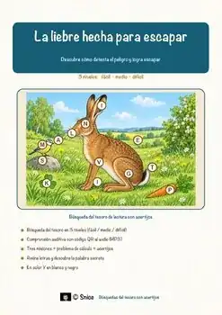
«La liebre hecha para escapar» – Búsqueda del tesoro de lectura
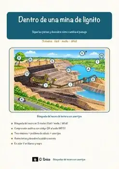
«Dentro de una mina de lignito» – Búsqueda del tesoro de lectura
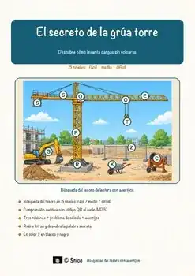
«El secreto de la grúa torre» – Búsqueda del tesoro de lectura
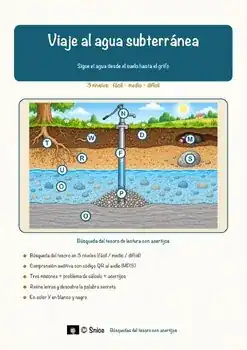
«Viaje al agua subterránea» – Búsqueda del tesoro de lectura
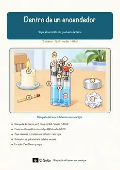
«Dentro de un encendedor» – Búsqueda del tesoro de lectura
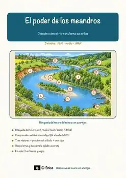
«El poder de los meandros» – Búsqueda del tesoro de lectura
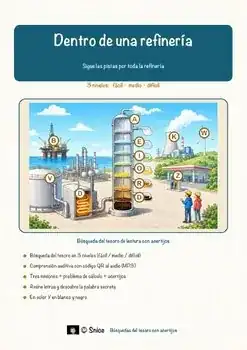
«Dentro de una refinería» – Búsqueda del tesoro de lectura
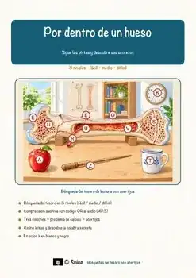
«Por dentro de un hueso» – Búsqueda del tesoro de lectura
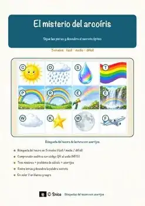
«El misterio del arcoíris» – Búsqueda del tesoro de lectura
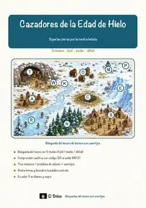
«Cazadores de la Edad de Hielo» – Búsqueda del tesoro de lectura
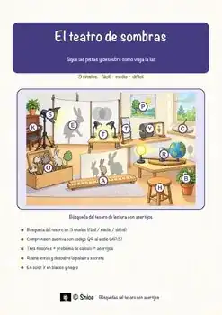
«El teatro de sombras» – Búsqueda del tesoro de lectura
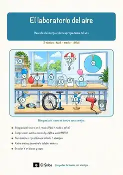
«El laboratorio del aire» – Búsqueda del tesoro de lectura
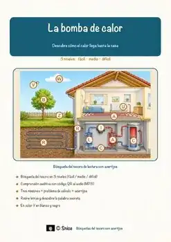
«La bomba de calor» – Búsqueda del tesoro de lectura
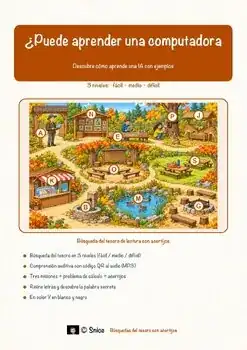
«¿Puede aprender una computadora?» – Búsqueda del tesoro de lectura
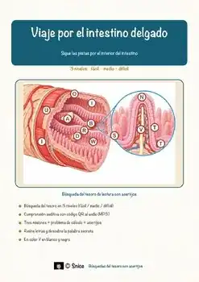
«Viaje por el intestino delgado» – Búsqueda del tesoro de lectura
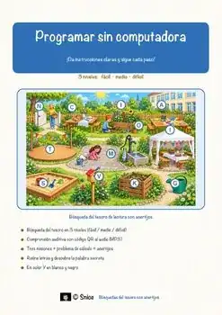
«Programar sin computadora: Instrucciones claras paso a paso» – Búsqueda del tesoro de lectura
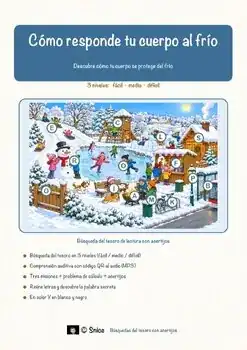
«Cómo responde tu cuerpo al frío» – Búsqueda del tesoro de lectura

«Arañas viajeras del otoño» – Búsqueda del tesoro de lectura
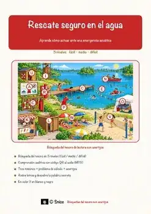
«Rescate seguro en el agua» – Búsqueda del tesoro de lectura
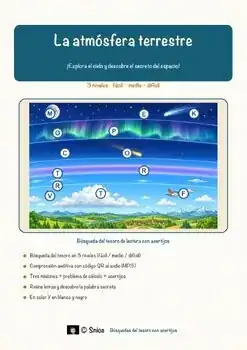
«La atmósfera terrestre» – Búsqueda del tesoro de lectura
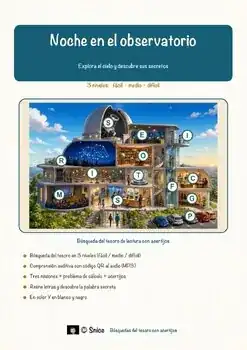
«Noche en el observatorio» – Búsqueda del tesoro de lectura
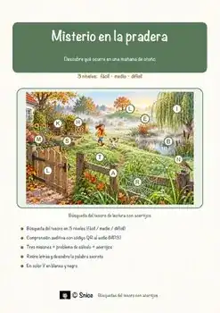
«Misterio en la pradera» – Búsqueda del tesoro de lectura
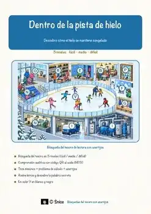
«Dentro de la pista de hielo» – Búsqueda del tesoro de lectura
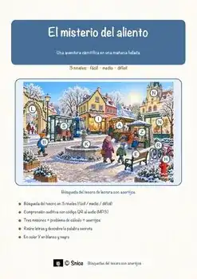
«El misterio del aliento» – Búsqueda del tesoro de lectura

«Aventura en la granja de calabazas» – Búsqueda del tesoro de lectura
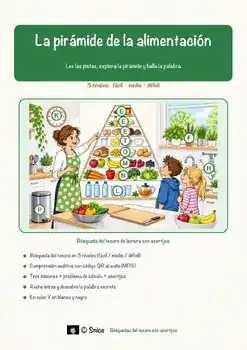
«La pirámide de la alimentación» – Búsqueda del tesoro de lectura
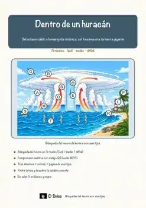
«Dentro de un huracán» – Búsqueda del tesoro de lectura
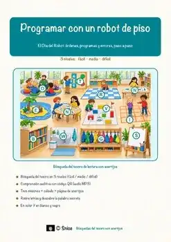
«Programar con un robot de piso» – Búsqueda del tesoro de lectura
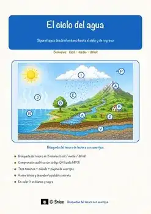
«El ciclo del agua» – Búsqueda del tesoro de lectura
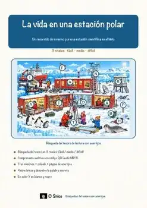
«La vida en una estación polar» – Búsqueda del tesoro de lectura
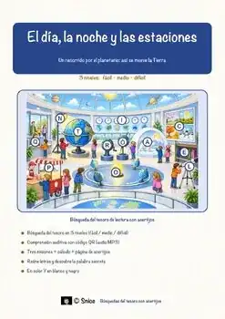
«El día, la noche y las estaciones» – Búsqueda del tesoro de lectura
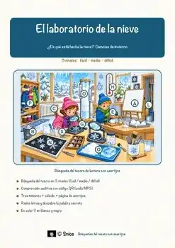
«El laboratorio de la nieve» – Búsqueda del tesoro de lectura
Astronomía – Ficha de lectura: texto con huecos, comprensión auditiva y sopa de letras
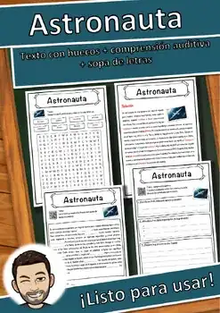
Astronauta – Ficha de lectura: texto con huecos, comprensión auditiva y sopa de letras
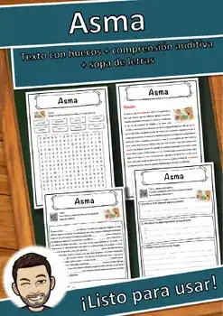
Asma – Ficha de lectura: texto con huecos, comprensión auditiva y sopa de letras
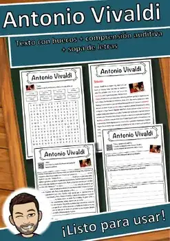
Antonio Vivaldi – Ficha de lectura: texto con huecos, comprensión auditiva y sopa de letras
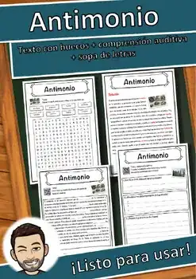
Antimonio – Ficha de lectura: texto con huecos, comprensión auditiva y sopa de letras
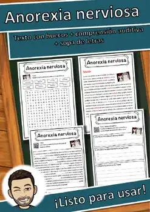
Anorexia nerviosa – Ficha de lectura: texto con huecos, comprensión auditiva y sopa de letras
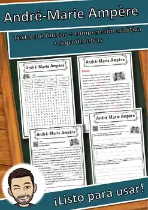
André-Marie Ampère – Ficha de lectura: texto con huecos, comprensión auditiva y sopa de letras
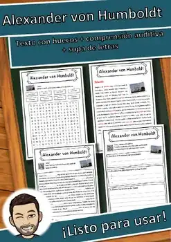
Alexander von Humboldt – Ficha de lectura: texto con huecos, comprensión auditiva y sopa de letras
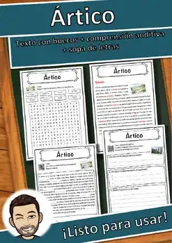
Ártico – Ficha de lectura: texto con huecos, comprensión auditiva y sopa de letras
Wellness – Ficha de lectura: texto con huecos, comprensión auditiva y sopa de letras
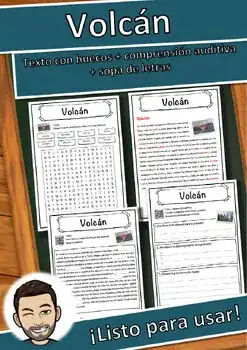
Volcán – Ficha de lectura: texto con huecos, comprensión auditiva y sopa de letras
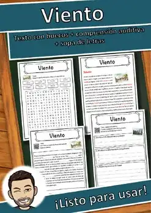
Viento – Ficha de lectura: texto con huecos, comprensión auditiva y sopa de letras
No se encontraron recursos. Prueba con otra palabra o con otro filtro.